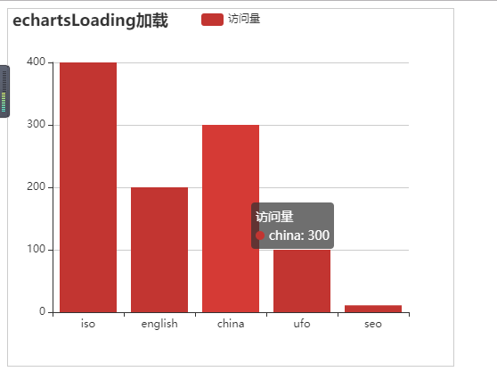

最近开发项目用到echarts图表展示数据信息，需要调用后台接口，写一篇博客来记录一下实现过程，末尾附源码
首先准备一个json文件echarts.json（名字无所谓），用来模拟从后台获取数据
第二步上echarts官网下载，或直接引用生成图表用到的js，这里给出官网：https://www.echartsjs.com/index.html
然后在页面直接引用
这里给出echarts.js的下载链接：https://echarts.baidu.com/dist/echarts.min.js
第三步在body中准备一个容器，用来显示图表
紧接着在js中初始化echarts对象，直接上代码
<script type="text/javascript">
var container = document.getElementById('container');
// 初始化加载对象myContainer
var myContainer = echarts.init(container);
//未获取数据前，显示loading加载动画
myContainer.showLoading();
function bindData() {
//为了效果明显，我们做了延迟读取数据
setTimeout(function() {
//异步加载数据,get请求我们刚刚准备的json文件,正式开发中调用相应的接口
$.get('js/echarts.json', function(res) {
console.log(res)
//获取数据后，隐藏loading动画
myContainer.hideLoading();
myContainer.setOption(option = {
title: {
text: 'echartsLoading加载'
},
tooltip: {},
legend: {},
// xAxis代表x轴的数据
xAxis: {
data: res.name,
// 字段对应从json里面的字段
},
// yAxis代表y轴的数据,不写会自动适应数据
yAxis: {},
// series代表鼠标悬浮到图标上时提示的对应信息
series: [{
name: '访问量',
type: 'bar',
data: res.data,
// 字段对应从json里面的字段
}]
});
})
}, 2000)
}
bindData();
</script>看到这里如果能生成一个柱状图，那么恭喜你已经可以从后台获取数据了
如果还没有的话就看全部代码吧，加油哦
<!DOCTYPE html>
<html lang="en">
<head>
<meta charset="UTF-8">
<title>echarts-异步加载数据</title>
<link rel="stylesheet" href="11.scss">
<script src="js/eacher.min.js" type="text/javascript" charset="utf-8"></script>
<script src="js/new_file.js" type="text/javascript" charset="utf-8"></script>
<style>
#container{
width: 500px;
height: 400px;
border: 1px solid #ccc;
/**/
}
</style>
</head>
<body>
<div id="container"></div>
<!-- -->
<script type="text/javascript">
var container = document.getElementById('container');
// 初始化加载对象myContainer
var myContainer = echarts.init(container);
//未获取数据前，显示loading加载动画
myContainer.showLoading();
function bindData() {
//为了效果明显，我们做了延迟读取数据
setTimeout(function() {
//异步加载数据,get请求我们刚刚准备的json文件,正式开发中调用相应的接口
$.get('js/echarts.json', function(res) {
console.log(res)
//获取数据后，隐藏loading动画
myContainer.hideLoading();
myContainer.setOption(option = {
title: {
text: 'echartsLoading加载'
},
tooltip: {},
legend: {},
// xAxis代表x轴的数据
xAxis: {
data: res.name,
// 字段对应从json里面的字段
},
// yAxis代表y轴的数据,不写会自动适应数据
yAxis: {},
// series代表鼠标悬浮到图标上时提示的对应信息
series: [{
name: '访问量',
type: 'bar',
data: res.data,
// 字段对应从json里面的字段
}]
});
})
}, 2000)
}
bindData();
</script>
</body>
</html>json文件
{
"name":["iso","english","china","ufo","seo"],
"data":[400,200,300,100,11]
}效果图

转载于:https://www.cnblogs.com/songzxblog/p/11383879.html